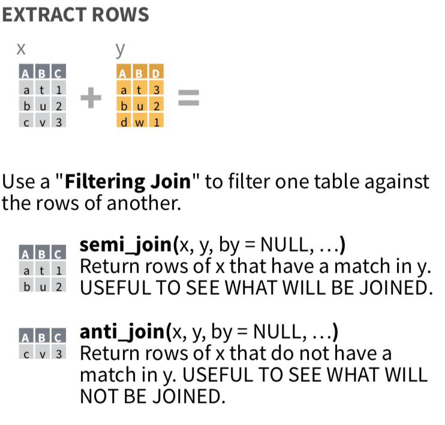
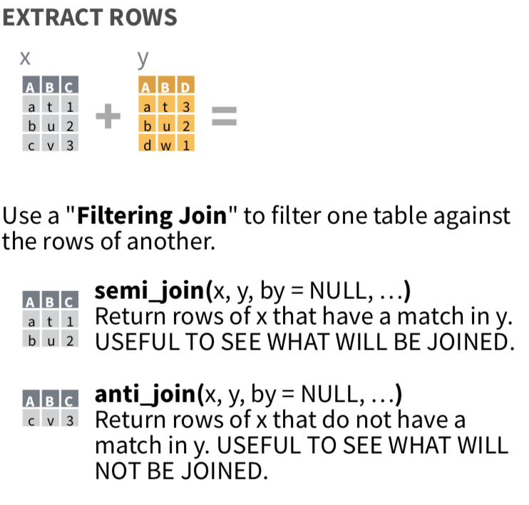

the “tidy” concept
“A huge amount of effort is spent cleaning data to get it ready for analysis, but there has been little research on how to make data cleaning as easy and effective as possible.”” - Hadley Wickham
a tidy dataset is …
- easy to manipulate
- easy to model
- easy to visualize
- have a specific structure –> each variable is a column, each observation is a row, and each type of observational unit is a table.
code writing must be tidy too
The tidyverse code style is a developent based on Google’s R Style Guide
Examples:
File names should be meaningful and end in .R. Avoid using special characters in file names - stick with numbers, letters, -, and _.
# Good
fit_models.R
utility_functions.R
# Bad
fit models.R
foo.r
stuff.rUse commented lines of - and = to break up your file into easily readable chunks.
# Load data ---------------------------
# Plot data ---------------------------Variable and function names should use only lowercase letters, numbers, and . Use underscores () (so called snake case) to separate words within a name.
# Good
day_one
day_1
# Bad
DayOne
dayoneIf the arguments to a function don’t all fit on one line, put each argument on its own line and indent:
iris %>%
group_by(Species) %>%
summarise(
Sepal.Length = mean(Sepal.Length),
Sepal.Width = mean(Sepal.Width),
Species = n_distinct(Species)
)What means “tidy / tidy data”?

tidydata_2 by Allison Horst

tidydata_1 by Allison Horst
Tidy data is a way to organize tabular data. It provides a consistent data structure accross packages

Example of data vs tidy data
“Messy data” to tidy data !!!
new functions since tidyr v1.0.0:
pivot_wider()pivot_longer()

reshape data frame
pivot_longer()
pivot_longer(data, cols, names_to = "name", values_to = "value", ...)
some arguments:
| argument | description |
|---|---|
| data | a data frame to pivot |
| cols | Columns to pivot into longer format |
| names_to | A string specifying the name of the column to create from the data stored in the column names of data |
| values_to | A string specifying the name of the column to create from the data stored in cell values. |
pivot_wider()
pivot_wider(data, id_cols, names_from = name, values_from = value, ...)
some arguments:
| argument | description |
|---|---|
| data | a data frame to pivot |
| id_cols | A set of columns that uniquely identifies each observation. Defaults to all columns in data except for the columns specified in names_from and values_from. |
| names_from | argument describing which column (or columns) to get the name of the output column (name_from) |
| values_from | argument describing which column (or columns) to get the value of the output column (values_from) |
The Tidyverse (+ others)
This “meta-package” consists of several R packages, or as the Founding Father Hadley Wickahm says, “The tidyverse is an opinionated collection of R packages designed for data science.”
tidyverse and related packages (data science workflow “Hadley Wickhams view”)
#install.packages("tidyverse")
#load the complete tidyverse at once
library(tidyverse)| package | description | |
|---|---|---|
 |
ggplot2 (plotting) | ggplot2 is a system for declaratively creating graphics, based on The Grammar of Graphics. You provide the data, tell ggplot2 how to map variables to aesthetics, what graphical primitives to use, and it takes care of the details. |
 |
dplyr (for transforming and summarizing dataframe content) | dplyr provides a grammar of data manipulation, providing a consistent set of verbs that solve the most common data manipulation challenges. |
 |
tidyr (for transforming (“tidying”) data frame structure) | tidyrprovides a set of functions that help you get to tidy data. Tidy data is data with a consistent form: in brief, every variable goes in a column, and every column is a variable. |
 |
readr (reading/saving data) | readr provides a fast and friendly way to read rectangular data (like csv, tsv, and fwf). It is designed to flexibly parse many types of data found in the wild, while still cleanly failing when data unexpectedly changes. |
 |
purrr (functional programming) | purrr enhances R’s functional programming (FP) toolkit by providing a complete and consistent set of tools for working with functions and vectors. Once you master the basic concepts, purrr allows you to replace many for loops with code that is easier to write and more expressive. ( an upgrade of base R functional programming tools. (Beyond scope of class.)) |
 |
tibble (an improved data frame) | tibble is a modern re-imagining of the data frame, keeping what time has proven to be effective, and throwing out what it has not. Tibbles are data.frames that are lazy and surly: they do less and complain more forcing you to confront problems earlier, typically leading to cleaner, more expressive code. |
 |
stringr (dealing and manipulation of strings) | stringr provides a cohesive set of functions designed to make working with strings as easy as possible. It is built on top of stringi, which uses the ICU C library to provide fast, correct implementations of common string manipulations. |
 |
forcats (dealing with factors) | provides a suite of useful tools that solve common problems with factors. R uses factors to handle categorical variables, variables that have a fixed and known set of possible values. |
 |
magrittr (pipeline mode of functions) | offers a set of operators which make your code more readable by: structuring sequences of data operations left-to-right (as opposed to from the inside and out),avoiding nested function calls, minimizing the need for local variables and function definitions, and making it easy to add steps anywhere in the sequence of operations.The operators pipe their left-hand side values forward into expressions that appear on the right-hand side, i.e. one can replace f(x) with x %>% f(), where %>% is the (main) pipe-operator. When coupling several function calls with the pipe-operator, the benefit will become more apparent. |
Important:
Commands/functions of each package can be strung together in order using
the pipe %>% (Ctrl + ↑ +
M) operator. (example follows…)
read more abaout the tidyverse on the webpage
You will learn functionalities of each package during the course via useful example scripts.
where do the package names come from ?
Well the name (choosen by the programmer) of a package often conveys a story and is focused mainly on the usage of the package.
examples:
- dplyr - So the
dstands for data frames (othersdbfor databases,dtfor data tables…) ;plyrR apply-functions – „split-apply-combine“ strategy - ggplot2 - Grammer of Graphics plotting (https://vita.had.co.nz/papers/layered-grammar.html)
- purrr - Hadley Wickham - “your pure R functions purrr”
- vroom - reads data so fast, you almost can hear it making vroom vroom like a sports car
First things first, “What is a tibble?”
A tibble is a modern reimagining of the data.frame, keeping what time has proven to be effective, and throwing out what is not. Tibbles are data.frames that are lazy and surly: they do less (i.e. they don’t change variable names or types, and don’t do partial matching) and complain more (e.g. when a variable does not exist). This forces you to confront problems earlier, typically leading to cleaner, more expressive code. Tibbles also have an enhanced print() method which makes them easier to use with large datasets containing complex objects.
- tibble is a modern re-imagining of the data frame –> tibble is a list in data.frame style
tibble example:
Tibbles enhance data frames in three ways:
- Subsetting - [ always returns a new tibble, [[ and $ always return a new vector
- No partial matching - You must use full column names when subsetting
- Display - When you print a tibble, R provides a concise view of the data that fits on one screen
convert a data frame to tibble
Use the as_tibble() function to convert a data.frame to
a tibble
#data frame version of diamonds dataset
df_diamonds <- as.data.frame(diamonds)
class(df_diamonds)## [1] "data.frame"tibble_diamonds <- as_tibble(diamonds)
class(tibble_diamonds)## [1] "tbl_df" "tbl" "data.frame"#DETAILS:This is an S3 generic. tibble includes methods for data frames (adds tbl_df classes), tibbles (returns unchanged input), lists, matrices, and tables. Other types are first coerced via as.data.frame() with stringsAsFactors = FALSE.#classic short view of the data
head(df_diamonds)## carat cut color clarity depth table price x y z
## 1 0.23 Ideal E SI2 61.5 55 326 3.95 3.98 2.43
## 2 0.21 Premium E SI1 59.8 61 326 3.89 3.84 2.31
## 3 0.23 Good E VS1 56.9 65 327 4.05 4.07 2.31
## 4 0.29 Premium I VS2 62.4 58 334 4.20 4.23 2.63
## 5 0.31 Good J SI2 63.3 58 335 4.34 4.35 2.75
## 6 0.24 Very Good J VVS2 62.8 57 336 3.94 3.96 2.48#tibble view is enhanced with dimension and class of each column etc.
tibble_diamonds## # A tibble: 53,940 × 10
## carat cut color clarity depth table price x y z
## <dbl> <ord> <ord> <ord> <dbl> <dbl> <int> <dbl> <dbl> <dbl>
## 1 0.23 Ideal E SI2 61.5 55 326 3.95 3.98 2.43
## 2 0.21 Premium E SI1 59.8 61 326 3.89 3.84 2.31
## 3 0.23 Good E VS1 56.9 65 327 4.05 4.07 2.31
## 4 0.29 Premium I VS2 62.4 58 334 4.2 4.23 2.63
## 5 0.31 Good J SI2 63.3 58 335 4.34 4.35 2.75
## 6 0.24 Very Good J VVS2 62.8 57 336 3.94 3.96 2.48
## 7 0.24 Very Good I VVS1 62.3 57 336 3.95 3.98 2.47
## 8 0.26 Very Good H SI1 61.9 55 337 4.07 4.11 2.53
## 9 0.22 Fair E VS2 65.1 61 337 3.87 3.78 2.49
## 10 0.23 Very Good H VS1 59.4 61 338 4 4.05 2.39
## # … with 53,930 more rowscreate a tibble from scratch
Use the tibble() function or tribble()
function
tibble() –> INPUT: A set of name-value
pairs. Arguments are evaluated sequentially, so you can refer to
previously created variables. These arguments are processed with
rlang::quos() and support unquote via !! and unquote-splice via !!!.
tribble() –> INPUT: Arguments specifying the
structure of a tibble. Variable names should be formulas, and may only
appear before the data.
a <- 1:5
tibble(a, b = a * 2)## # A tibble: 5 × 2
## a b
## <int> <dbl>
## 1 1 2
## 2 2 4
## 3 3 6
## 4 4 8
## 5 5 10tibble(a, b = a * 2, c = 1)## # A tibble: 5 × 3
## a b c
## <int> <dbl> <dbl>
## 1 1 2 1
## 2 2 4 1
## 3 3 6 1
## 4 4 8 1
## 5 5 10 1#tribble() example:
tribble(
~colA, ~colB,
"a", 1,
"b", 2,
"c", 3
)## # A tibble: 3 × 2
## colA colB
## <chr> <dbl>
## 1 a 1
## 2 b 2
## 3 c 3# tribble will create a list column if the value in any cell is
# not a scalar
tribble(
~x, ~y,
"a", 1:3,
"b", 4:6
)## # A tibble: 2 × 2
## x y
## <chr> <list>
## 1 a <int [3]>
## 2 b <int [3]>many tidyverse functions you may find explained and coupled with a pratical examples in the Examples section
data wrangling with the tidyverse
magrittr packge %>% operator
“Pipes are a powerful tool for clearly expressing a sequence of
multiple operations. … The pipe, %>%, comes from the
magrittr package by Stefan Milton Bache. Packages in the tidyverse load
%>% for you automatically, so you don’t usually load
magrittr explicitly.” @Wickham2017
pipes (moves) what is written on the left-hand side (LHS) of the pipe into the first argument of the function on the right-hand side (RHS) of the pipe
| magrittr (pipeline mode of functions) |
The magrittr package offers a set of operators
which make your code more readable by: - structuring sequences of data operations left-to-right (as opposed to from the inside and out), - avoiding nested function calls, - minimizing the need for local variables and function definitions, and - making it easy to add steps anywhere in the sequence of operations. |
Basic piping (%>%)
Many functions accept a data argument, e.g. lm and aggregate, which is very useful in a pipeline where data is first processed and then passed into such a function. There are also functions that do not have a data argument, for which it is useful to expose the variables in the data. This is done with the %$% operator:
x %>% fis equivalent tof(x)x %>% f(y)is equivalent tof(x, y)x %>% f %>% g %>% his equivalent toh(g(f(x)))
When not to use the pipe
The pipe is a powerful tool, but it’s not the only tool at your disposal, and it doesn’t solve every problem! Pipes are most useful for rewriting a fairly short linear sequence of operations. I think you should reach for another tool when:
Your pipes are longer than (say) ten steps. In that case, create intermediate objects with meaningful names. That will make debugging easier, because you can more easily check the intermediate results, and it makes it easier to understand your code, because the variable names can help communicate intent.
You have multiple inputs or outputs. If there isn’t one primary object being transformed, but two or more objects being combined together, don’t use the pipe.
You are starting to think about a directed graph with a complex dependency structure. Pipes are fundamentally linear and expressing complex relationships with them will typically yield confusing code.
Pipe with exposition of variables (%$%)
Many functions accept a data argument, e.g. lm and aggregate, which
is very useful in a pipeline where data is first processed and then
passed into such a function. There are also functions that do not have a
data argument, for which it is useful to expose the variables in the
data. This is done with the %$% operator:
#mtcars correlation of disp and mpg variable
library(magrittr)
iris %>%
subset(Sepal.Length > mean(Sepal.Length)) %$%
cor(Sepal.Length, Sepal.Width)## [1] 0.336mtcars %$% cor(disp,mpg)## [1] -0.848native pipe |> R
Since R version 4.1 the |>native pipe operator was
introduced.
Differences to %>% magrittr pipe:
- First, unlike {margrittr}, the native R pipe requires round brackets in function calls in any case.
- Second, the native variant no longer allows the dot to be used as a placeholder for passing values, potentially requiring the definition of an additional function.
The native pipe can be used as default.

RStudio native R pipe shortcut usage
Explanation of pipes: |> vs %>% from R4DS -
Hadley Wickham
“While |> and %>% behave identically
for simple cases, there are a few important differences. These are most
likely to affect you if you’re a long-term user of %>%
who has taken advantage of some of the more advanced features. But
they’re still good to know about even if you’ve never used %>%
because you’re likely to encounter some of them when reading wild-caught
code.”
“By default, the pipe passes the object on its left hand side to the first argument of the function on the right-hand side.
%>%allows you change the placement with a.placeholder. For example,x %>% f(1)is equivalent tof(x, 1)butx %>% f(1, .)is equivalent tof(1, x). R 4.2.0 added a_placeholder to the base pipe, with one additional restriction: the argument has to be named. For example,x |> f(1, y = _)is equivalent tof(1, y = x).”“The
|>placeholder is deliberately simple and can’t replicate many features of the%>%placeholder: you can’t pass it to multiple arguments, and it doesn’t have any special behavior when the placeholder is used inside another function. For example,df %>% split(.$var)is equivalent tosplit(df, df$var)anddf %>% {split(.$x, .$y)}is equivalent tosplit(df$x, df$y).”“With
%>%you can use.on the left-hand side of operators like$,[[,[, so you can extract a single column from a data frame with (e.g.)mtcars %>% .$cyl. A future version of R may add similar support for|>and_. For the special case of extracting a column out of a data frame, you can also usedplyr::pull():mtcars |> pull(cyl)”“
%>%allows you to drop the parentheses when calling a function with no other arguments;|>always requires the parentheses.”“
%>%allows you to start a pipe with.to create a function rather than immediately executing the pipe; this is not supported by the base pipe.”
“Luckily there’s no need to commit entirely to one pipe or the other — you can use the base pipe for the majority of cases where it’s sufficient, and use the magrittr pipe when you really need its special features.”
reshaping data - story from long and wide tibble/tables
data reshaping with tidyr
Data reshaping with tidyr is very easy when understanding one principle.
A “messy” data frame like this (2 dimensional data):
library(tidyverse)
set.seed(666)
normal_messy_data <- tibble(protein = c(rep("protein_1",26),rep("protein_2",26),rep("protein_3",26)),
peptide = c(paste(letters,"_1",sep=""),paste(letters,"_2",sep=""),paste(letters,"_3",sep="")),
Condition1_BR1 = rnorm(n = 78,mean = 100,sd =1),
Condition1_BR2 = rnorm(n = 78,mean = 110,sd =1),
Condition1_BR3 = rnorm(n = 78,mean = 105,sd =1),
Condition1_BR4 = rnorm(n = 78,mean = 115,sd =1),
Condition1_BR5 = rnorm(n = 78,mean = 115,sd =1),
Condition2_BR1 = rnorm(n = 78,mean = 100*4,sd =1),
Condition2_BR2 = rnorm(n = 78,mean = 110*4,sd =1),
Condition2_BR3 = rnorm(n = 78,mean = 105*4,sd =1),
Condition2_BR4 = rnorm(n = 78,mean = 115*4,sd =1),
Condition2_BR5 = rnorm(n = 78,mean = 115*4,sd =1)
)
normal_messy_data## # A tibble: 78 × 12
## protein peptide Condition…¹ Condi…² Condi…³ Condi…⁴ Condi…⁵ Condi…⁶ Condi…⁷
## <chr> <chr> <dbl> <dbl> <dbl> <dbl> <dbl> <dbl> <dbl>
## 1 protein_1 a_1 101. 109. 106. 115. 115. 400. 439.
## 2 protein_1 b_1 102. 109. 106. 115. 114. 400. 439.
## 3 protein_1 c_1 99.6 111. 106. 113. 114. 398. 442.
## 4 protein_1 d_1 102. 111. 104. 115. 116. 401. 439.
## 5 protein_1 e_1 97.8 110. 105. 114. 116. 401. 440.
## 6 protein_1 f_1 101. 109. 106. 114. 114. 401. 438.
## 7 protein_1 g_1 98.7 110. 105. 116. 113. 401. 440.
## 8 protein_1 h_1 99.2 111. 107. 113. 114. 399. 439.
## 9 protein_1 i_1 98.2 110. 104. 114. 113. 400. 439.
## 10 protein_1 j_1 100. 111. 106. 114. 115. 402. 440.
## # … with 68 more rows, 3 more variables: Condition2_BR3 <dbl>,
## # Condition2_BR4 <dbl>, Condition2_BR5 <dbl>, and abbreviated variable names
## # ¹Condition1_BR1, ²Condition1_BR2, ³Condition1_BR3, ⁴Condition1_BR4,
## # ⁵Condition1_BR5, ⁶Condition2_BR1, ⁷Condition2_BR2can be easily transformed to a tidy tibble using the reshape function of tidyr:
pivot_longer()to make things tidy (long data format) (old:gather())
normal_tidy_data <- normal_messy_data %>%
pivot_longer(colnames(normal_messy_data)[-c(1:2)],
names_to = "samples",
values_to = "intensity")
normal_tidy_data## # A tibble: 780 × 4
## protein peptide samples intensity
## <chr> <chr> <chr> <dbl>
## 1 protein_1 a_1 Condition1_BR1 101.
## 2 protein_1 a_1 Condition1_BR2 109.
## 3 protein_1 a_1 Condition1_BR3 106.
## 4 protein_1 a_1 Condition1_BR4 115.
## 5 protein_1 a_1 Condition1_BR5 115.
## 6 protein_1 a_1 Condition2_BR1 400.
## 7 protein_1 a_1 Condition2_BR2 439.
## 8 protein_1 a_1 Condition2_BR3 420.
## 9 protein_1 a_1 Condition2_BR4 460.
## 10 protein_1 a_1 Condition2_BR5 460.
## # … with 770 more rowsNow we have some tidy data, which can be multidimensional. A back
transformation is quiet easy but I would always recommend to include a
column select() (less error prone)
pivot_wider()to make data wide again (old:spread())select()select only column needed (see below)
normal_tidy_data %>% pivot_wider(names_from = "samples",values_from = "intensity")## # A tibble: 78 × 12
## protein peptide Condition…¹ Condi…² Condi…³ Condi…⁴ Condi…⁵ Condi…⁶ Condi…⁷
## <chr> <chr> <dbl> <dbl> <dbl> <dbl> <dbl> <dbl> <dbl>
## 1 protein_1 a_1 101. 109. 106. 115. 115. 400. 439.
## 2 protein_1 b_1 102. 109. 106. 115. 114. 400. 439.
## 3 protein_1 c_1 99.6 111. 106. 113. 114. 398. 442.
## 4 protein_1 d_1 102. 111. 104. 115. 116. 401. 439.
## 5 protein_1 e_1 97.8 110. 105. 114. 116. 401. 440.
## 6 protein_1 f_1 101. 109. 106. 114. 114. 401. 438.
## 7 protein_1 g_1 98.7 110. 105. 116. 113. 401. 440.
## 8 protein_1 h_1 99.2 111. 107. 113. 114. 399. 439.
## 9 protein_1 i_1 98.2 110. 104. 114. 113. 400. 439.
## 10 protein_1 j_1 100. 111. 106. 114. 115. 402. 440.
## # … with 68 more rows, 3 more variables: Condition2_BR3 <dbl>,
## # Condition2_BR4 <dbl>, Condition2_BR5 <dbl>, and abbreviated variable names
## # ¹Condition1_BR1, ²Condition1_BR2, ³Condition1_BR3, ⁴Condition1_BR4,
## # ⁵Condition1_BR5, ⁶Condition2_BR1, ⁷Condition2_BR2But first lets clean our tidy data by separate columns using
separate() function
normal_tidy_data_cleaned <- normal_tidy_data %>%
separate(col = "samples",
into = c("condition","replicate"),
sep = "_",
remove = F)
normal_tidy_data_cleaned## # A tibble: 780 × 6
## protein peptide samples condition replicate intensity
## <chr> <chr> <chr> <chr> <chr> <dbl>
## 1 protein_1 a_1 Condition1_BR1 Condition1 BR1 101.
## 2 protein_1 a_1 Condition1_BR2 Condition1 BR2 109.
## 3 protein_1 a_1 Condition1_BR3 Condition1 BR3 106.
## 4 protein_1 a_1 Condition1_BR4 Condition1 BR4 115.
## 5 protein_1 a_1 Condition1_BR5 Condition1 BR5 115.
## 6 protein_1 a_1 Condition2_BR1 Condition2 BR1 400.
## 7 protein_1 a_1 Condition2_BR2 Condition2 BR2 439.
## 8 protein_1 a_1 Condition2_BR3 Condition2 BR3 420.
## 9 protein_1 a_1 Condition2_BR4 Condition2 BR4 460.
## 10 protein_1 a_1 Condition2_BR5 Condition2 BR5 460.
## # … with 770 more rowsLets reshape normal_tidy_data_cleaned to wide format
using the same code used above
normal_tidy_data_cleaned %>% pivot_wider(names_from = "samples",values_from = "intensity")## # A tibble: 780 × 14
## protein peptide condition replic…¹ Condi…² Condi…³ Condi…⁴ Condi…⁵ Condi…⁶
## <chr> <chr> <chr> <chr> <dbl> <dbl> <dbl> <dbl> <dbl>
## 1 protein_1 a_1 Condition1 BR1 101. NA NA NA NA
## 2 protein_1 a_1 Condition1 BR2 NA 109. NA NA NA
## 3 protein_1 a_1 Condition1 BR3 NA NA 106. NA NA
## 4 protein_1 a_1 Condition1 BR4 NA NA NA 115. NA
## 5 protein_1 a_1 Condition1 BR5 NA NA NA NA 115.
## 6 protein_1 a_1 Condition2 BR1 NA NA NA NA NA
## 7 protein_1 a_1 Condition2 BR2 NA NA NA NA NA
## 8 protein_1 a_1 Condition2 BR3 NA NA NA NA NA
## 9 protein_1 a_1 Condition2 BR4 NA NA NA NA NA
## 10 protein_1 a_1 Condition2 BR5 NA NA NA NA NA
## # … with 770 more rows, 5 more variables: Condition2_BR1 <dbl>,
## # Condition2_BR2 <dbl>, Condition2_BR3 <dbl>, Condition2_BR4 <dbl>,
## # Condition2_BR5 <dbl>, and abbreviated variable names ¹replicate,
## # ²Condition1_BR1, ³Condition1_BR2, ⁴Condition1_BR3, ⁵Condition1_BR4,
## # ⁶Condition1_BR5MHH, something is wrong. Because a important column, which also
describes the column in the wide format exists in the tidy format. The
spread() function tries to match the rows with the addition
replicate column resulting in the diagonal wide format error.
It is important to use the above mentioned select() function to generete
the wide format (2 dimension: rows (protein, peptide) and column
(samples) with a value).
normal_tidy_data_cleaned %>% dplyr::select(protein,peptide,samples,intensity)## # A tibble: 780 × 4
## protein peptide samples intensity
## <chr> <chr> <chr> <dbl>
## 1 protein_1 a_1 Condition1_BR1 101.
## 2 protein_1 a_1 Condition1_BR2 109.
## 3 protein_1 a_1 Condition1_BR3 106.
## 4 protein_1 a_1 Condition1_BR4 115.
## 5 protein_1 a_1 Condition1_BR5 115.
## 6 protein_1 a_1 Condition2_BR1 400.
## 7 protein_1 a_1 Condition2_BR2 439.
## 8 protein_1 a_1 Condition2_BR3 420.
## 9 protein_1 a_1 Condition2_BR4 460.
## 10 protein_1 a_1 Condition2_BR5 460.
## # … with 770 more rowsnormal_tidy_data_cleaned %>%
dplyr::select(protein,peptide,samples,intensity) %>%
pivot_wider(names_from = "samples",values_from = "intensity")## # A tibble: 78 × 12
## protein peptide Condition…¹ Condi…² Condi…³ Condi…⁴ Condi…⁵ Condi…⁶ Condi…⁷
## <chr> <chr> <dbl> <dbl> <dbl> <dbl> <dbl> <dbl> <dbl>
## 1 protein_1 a_1 101. 109. 106. 115. 115. 400. 439.
## 2 protein_1 b_1 102. 109. 106. 115. 114. 400. 439.
## 3 protein_1 c_1 99.6 111. 106. 113. 114. 398. 442.
## 4 protein_1 d_1 102. 111. 104. 115. 116. 401. 439.
## 5 protein_1 e_1 97.8 110. 105. 114. 116. 401. 440.
## 6 protein_1 f_1 101. 109. 106. 114. 114. 401. 438.
## 7 protein_1 g_1 98.7 110. 105. 116. 113. 401. 440.
## 8 protein_1 h_1 99.2 111. 107. 113. 114. 399. 439.
## 9 protein_1 i_1 98.2 110. 104. 114. 113. 400. 439.
## 10 protein_1 j_1 100. 111. 106. 114. 115. 402. 440.
## # … with 68 more rows, 3 more variables: Condition2_BR3 <dbl>,
## # Condition2_BR4 <dbl>, Condition2_BR5 <dbl>, and abbreviated variable names
## # ¹Condition1_BR1, ²Condition1_BR2, ³Condition1_BR3, ⁴Condition1_BR4,
## # ⁵Condition1_BR5, ⁶Condition2_BR1, ⁷Condition2_BR2none standard column names and tidyverse
Note: if you have none standard column names e.g. have a SPACE like “protein function” you can rename the column to e.g. “protein_function” or use backticks
`protein function`to use them inside tidyverse function.
normal_column_mess <- tibble("protein IDs" = c(rep("protein_1",26),rep("protein_2",26),rep("protein_3",26)),
"stripped-peptides" = c(paste(letters,"_1",sep=""),paste(letters,"_2",sep=""),paste(letters,"_3",sep="")),
Condition1_BR1 = rnorm(n = 78,mean = 100,sd =1),
Condition1_BR2 = rnorm(n = 78,mean = 110,sd =1),
Condition1_BR3 = rnorm(n = 78,mean = 105,sd =1),
Condition1_BR4 = rnorm(n = 78,mean = 115,sd =1)
)
normal_column_mess## # A tibble: 78 × 6
## `protein IDs` `stripped-peptides` Condition1_BR1 Condition1…¹ Condi…² Condi…³
## <chr> <chr> <dbl> <dbl> <dbl> <dbl>
## 1 protein_1 a_1 101. 109. 104. 114.
## 2 protein_1 b_1 99.6 112. 105. 116.
## 3 protein_1 c_1 101. 110. 106. 114.
## 4 protein_1 d_1 101. 109. 105. 114.
## 5 protein_1 e_1 101. 111. 106. 115.
## 6 protein_1 f_1 101. 109. 105. 115.
## 7 protein_1 g_1 100. 108. 103. 116.
## 8 protein_1 h_1 100. 111. 105. 116.
## 9 protein_1 i_1 99.8 109. 107. 115.
## 10 protein_1 j_1 99.6 111. 106. 115.
## # … with 68 more rows, and abbreviated variable names ¹Condition1_BR2,
## # ²Condition1_BR3, ³Condition1_BR4normal_column_mess %>% dplyr::select(stripped-peptides)
#will result in:
# Error in `select()`:
# ! object 'stripped' not found
# Backtrace:
# 1. normal_column_mess %>% select(stripped - peptides)
# 24. base::.handleSimpleError(...)
# 25. rlang (local) h(simpleError(msg, call))
# 26. handlers[[1L]](cnd)# using backticks is going to work
normal_column_mess %>% dplyr::select(`stripped-peptides`)## # A tibble: 78 × 1
## `stripped-peptides`
## <chr>
## 1 a_1
## 2 b_1
## 3 c_1
## 4 d_1
## 5 e_1
## 6 f_1
## 7 g_1
## 8 h_1
## 9 i_1
## 10 j_1
## # … with 68 more rows# using quotes is going to work as well
normal_column_mess %>% dplyr::select("stripped-peptides")## # A tibble: 78 × 1
## `stripped-peptides`
## <chr>
## 1 a_1
## 2 b_1
## 3 c_1
## 4 d_1
## 5 e_1
## 6 f_1
## 7 g_1
## 8 h_1
## 9 i_1
## 10 j_1
## # … with 68 more rowsget a short overview of your data
glimpse() get a glimpse of your data. This is a brief
overview of your data.
normal_tidy_data_cleaned %>% glimpse()## Rows: 780
## Columns: 6
## $ protein <chr> "protein_1", "protein_1", "protein_1", "protein_1", "protein…
## $ peptide <chr> "a_1", "a_1", "a_1", "a_1", "a_1", "a_1", "a_1", "a_1", "a_1…
## $ samples <chr> "Condition1_BR1", "Condition1_BR2", "Condition1_BR3", "Condi…
## $ condition <chr> "Condition1", "Condition1", "Condition1", "Condition1", "Con…
## $ replicate <chr> "BR1", "BR2", "BR3", "BR4", "BR5", "BR1", "BR2", "BR3", "BR4…
## $ intensity <dbl> 100.8, 109.4, 105.9, 115.5, 114.6, 400.0, 439.0, 420.1, 459.…same can be achieved with the str() function from base
R. str…Compactly Display the Structure of an Arbitrary R Object
str(normal_tidy_data_cleaned)## tibble [780 × 6] (S3: tbl_df/tbl/data.frame)
## $ protein : chr [1:780] "protein_1" "protein_1" "protein_1" "protein_1" ...
## $ peptide : chr [1:780] "a_1" "a_1" "a_1" "a_1" ...
## $ samples : chr [1:780] "Condition1_BR1" "Condition1_BR2" "Condition1_BR3" "Condition1_BR4" ...
## $ condition: chr [1:780] "Condition1" "Condition1" "Condition1" "Condition1" ...
## $ replicate: chr [1:780] "BR1" "BR2" "BR3" "BR4" ...
## $ intensity: num [1:780] 101 109 106 115 115 ...using group wise data wrangling
group-wise data handling is really powerful since several for loops and apply function can be replaced in a very convenient manor.

- always use
ungroup()function to ungroup data afterwards, otherwise grouping is kept
keep in mind
group_by()always sorts character vectors!
#Average, SD, CV over Replicates per peptide/protein
normal_tidy_data_cleaned_summary <- normal_tidy_data_cleaned %>%
group_by(condition,protein,peptide) %>%
summarise(mean_peptide_intensity = mean(intensity),
sd_peptide_intensity = sd(intensity),
cv_peptide_intensity = sd(intensity)/mean(intensity)) %>%
ungroup()## `summarise()` has grouped output by 'condition', 'protein'. You can override
## using the `.groups` argument.normal_tidy_data_cleaned_summary## # A tibble: 156 × 6
## condition protein peptide mean_peptide_intensity sd_peptide_inte…¹ cv_pe…²
## <chr> <chr> <chr> <dbl> <dbl> <dbl>
## 1 Condition1 protein_1 a_1 109. 6.13 0.0561
## 2 Condition1 protein_1 b_1 109. 5.42 0.0496
## 3 Condition1 protein_1 c_1 109. 6.14 0.0564
## 4 Condition1 protein_1 d_1 110. 6.37 0.0581
## 5 Condition1 protein_1 e_1 108. 7.42 0.0684
## 6 Condition1 protein_1 f_1 109. 5.77 0.0530
## 7 Condition1 protein_1 g_1 108. 6.88 0.0635
## 8 Condition1 protein_1 h_1 109. 6.02 0.0553
## 9 Condition1 protein_1 i_1 108. 6.76 0.0626
## 10 Condition1 protein_1 j_1 109. 6.44 0.0589
## # … with 146 more rows, and abbreviated variable names ¹sd_peptide_intensity,
## # ²cv_peptide_intensityother examples of dplyr function
top_N
Now we would like to have just the highest 2 peptides per protein and condition
#top_2 peptides per protein and condition
normal_tidy_data_cleaned_summary %>%
group_by(protein,condition) %>%
top_n( n = 2, wt = mean_peptide_intensity)## # A tibble: 12 × 6
## # Groups: protein, condition [6]
## condition protein peptide mean_peptide_intensity sd_peptide_inte…¹ cv_pe…²
## <chr> <chr> <chr> <dbl> <dbl> <dbl>
## 1 Condition1 protein_1 d_1 110. 6.37 0.0581
## 2 Condition1 protein_1 m_1 110. 6.65 0.0606
## 3 Condition1 protein_2 s_2 110. 6.50 0.0591
## 4 Condition1 protein_2 t_2 110. 7.35 0.0670
## 5 Condition1 protein_3 o_3 110. 6.55 0.0598
## 6 Condition1 protein_3 q_3 110. 5.66 0.0517
## 7 Condition2 protein_1 f_1 437. 26.1 0.0598
## 8 Condition2 protein_1 z_1 437. 25.9 0.0593
## 9 Condition2 protein_2 g_2 437. 25.9 0.0594
## 10 Condition2 protein_2 o_2 437. 25.5 0.0584
## 11 Condition2 protein_3 l_3 437. 26.1 0.0597
## 12 Condition2 protein_3 o_3 437. 25.6 0.0586
## # … with abbreviated variable names ¹sd_peptide_intensity,
## # ²cv_peptide_intensityadding ranks
Now we would like to add ranks for peptide-intensity per protein and condition
#rank peptides per protein and condition
# higher rank number = higher intensity
normal_tidy_data_cleaned_summary %>%
group_by(protein,condition) %>%
mutate(rank = dense_rank(mean_peptide_intensity))## # A tibble: 156 × 7
## # Groups: protein, condition [6]
## condition protein peptide mean_peptide_intensity sd_peptid…¹ cv_pe…² rank
## <chr> <chr> <chr> <dbl> <dbl> <dbl> <int>
## 1 Condition1 protein_1 a_1 109. 6.13 0.0561 18
## 2 Condition1 protein_1 b_1 109. 5.42 0.0496 22
## 3 Condition1 protein_1 c_1 109. 6.14 0.0564 10
## 4 Condition1 protein_1 d_1 110. 6.37 0.0581 25
## 5 Condition1 protein_1 e_1 108. 7.42 0.0684 7
## 6 Condition1 protein_1 f_1 109. 5.77 0.0530 9
## 7 Condition1 protein_1 g_1 108. 6.88 0.0635 6
## 8 Condition1 protein_1 h_1 109. 6.02 0.0553 11
## 9 Condition1 protein_1 i_1 108. 6.76 0.0626 2
## 10 Condition1 protein_1 j_1 109. 6.44 0.0589 20
## # … with 146 more rows, and abbreviated variable names ¹sd_peptide_intensity,
## # ²cv_peptide_intensityuse purrr instead of lapply
https://stackoverflow.com/questions/45101045/why-use-purrrmap-instead-of-lapply/47123420#47123420
join data
We use e.g. left_join() function from
dplyr package to combine tables.
Arguments
| x, y | tbls to join |
| by | a character vector of variables to join by. If
NULL, the default, *_join() will do a natural join, using
all variables with common names across the two tables. A message lists
the variables so that you can check they’re right (to suppress the
message, simply explicitly list the variables that you want to join). To
join by different variables on x and y use a named vector. For example,
by = c("a" = "b") will match x.a to y.b. |
| copy | If x and y are not from the same data source, and copy is TRUE, then y will be copied into the same src as x. This allows you to join tables across srcs, but it is a potentially expensive operation so you must opt into it. |
| suffix | If there are non-joined duplicate variables in x and y, these suffixes will be added to the output to disambiguate them. Should be a character vector of length 2. |
| … | and others. please see help |
Mutating joins combine variables from the two data.frames:
inner_join()
return all rows from x where there are matching values in y, and all columns from x and y. If there are multiple matches between x and y, all combination of the matches are returned.
left_join()
- return all rows from x, and all columns from x and y. Rows in x with no match in y will have NA values in the new columns. If there are multiple matches between x and y, all combinations of the matches are returned.
right_join()
- return all rows from y, and all columns from x and y. Rows in y with no match in x will have NA values in the new columns. If there are multiple matches between x and y, all combinations of the matches are returned.
full_join()
- return all rows and all columns from both x and y. Where there are not matching values, returns NA for the one missing.
Filtering joins keep cases from the left-hand data.frame:
semi_join()
return all rows from x where there are matching values in y, keeping just columns from x.
A semi join differs from an inner join because an inner join will return one row of x for each matching row of y, where a semi join will never duplicate rows of x.
anti_join()
- return all rows from x where there are not matching values in y, keeping just columns from x.
 

join data code examples
#having 2 tibble or data.frames etc.
#1st band members
band_members## # A tibble: 3 × 2
## name band
## <chr> <chr>
## 1 Mick Stones
## 2 John Beatles
## 3 Paul Beatles#2nd instruments
band_instruments## # A tibble: 3 × 2
## name plays
## <chr> <chr>
## 1 John guitar
## 2 Paul bass
## 3 Keith guitar# "Mutating" joins combine variables from the LHS and RHS
#return all rows from x where there are matching values in y, and all columns from x and y. If there are multiple matches between x and y, all combination of the matches are returned.
#____________________________________________________________________
band_members %>% inner_join(band_instruments)## Joining, by = "name"## # A tibble: 2 × 3
## name band plays
## <chr> <chr> <chr>
## 1 John Beatles guitar
## 2 Paul Beatles bass#return all rows from x, and all columns from x and y. Rows in x with no match in y will have NA values in the new columns. If there are multiple matches between x and y, all combinations of the matches are returned.
#____________________________________________________________________
band_members %>% left_join(band_instruments)## Joining, by = "name"## # A tibble: 3 × 3
## name band plays
## <chr> <chr> <chr>
## 1 Mick Stones <NA>
## 2 John Beatles guitar
## 3 Paul Beatles bass#return all rows from y, and all columns from x and y. Rows in y with no match in x will have NA values in the new columns. If there are multiple matches between x and y, all combinations of the matches are returned.
#____________________________________________________________________
band_members %>% right_join(band_instruments)## Joining, by = "name"## # A tibble: 3 × 3
## name band plays
## <chr> <chr> <chr>
## 1 John Beatles guitar
## 2 Paul Beatles bass
## 3 Keith <NA> guitar#return all rows and all columns from both x and y. Where there are not matching values, returns NA for the one missing.
#____________________________________________________________________
band_members %>% full_join(band_instruments)## Joining, by = "name"## # A tibble: 4 × 3
## name band plays
## <chr> <chr> <chr>
## 1 Mick Stones <NA>
## 2 John Beatles guitar
## 3 Paul Beatles bass
## 4 Keith <NA> guitar# "Filtering" joins keep cases from the LHS
band_members %>% semi_join(band_instruments)## Joining, by = "name"## # A tibble: 2 × 2
## name band
## <chr> <chr>
## 1 John Beatles
## 2 Paul Beatlesband_members %>% anti_join(band_instruments)## Joining, by = "name"## # A tibble: 1 × 2
## name band
## <chr> <chr>
## 1 Mick Stones# To suppress the message, supply by
band_members %>% inner_join(band_instruments, by = "name")## # A tibble: 2 × 3
## name band plays
## <chr> <chr> <chr>
## 1 John Beatles guitar
## 2 Paul Beatles bass# This is good practice in production code
# Use a named `by` if the join variables have different names
band_members %>% full_join(band_instruments2, by = c("name" = "artist"))## # A tibble: 4 × 3
## name band plays
## <chr> <chr> <chr>
## 1 Mick Stones <NA>
## 2 John Beatles guitar
## 3 Paul Beatles bass
## 4 Keith <NA> guitar# Note that only the key from the LHS is keptfiltering
the filter() function form the dplyr
package can be used to filter the data
Useful filter functions
==,>,>=etc.&,|,!,xor()is.na()!is.na()between()near()%in%%nin%function from helfRlein package helfRlein
Because filtering expressions are computed within groups, they may yield different results on grouped tibbles. This will be the case as soon as an aggregating, lagging, or ranking function is involved.
#Compare this ungrouped filtering:
starwars %>% filter(mass > mean(mass, na.rm = TRUE))## # A tibble: 10 × 14
## name height mass hair_…¹ skin_…² eye_c…³ birth…⁴ sex gender homew…⁵
## <chr> <int> <dbl> <chr> <chr> <chr> <dbl> <chr> <chr> <chr>
## 1 Darth Vader 202 136 none white yellow 41.9 male mascu… Tatooi…
## 2 Owen Lars 178 120 brown,… light blue 52 male mascu… Tatooi…
## 3 Chewbacca 228 112 brown unknown blue 200 male mascu… Kashyy…
## 4 Jabba Desi… 175 1358 <NA> green-… orange 600 herm… mascu… Nal Hu…
## 5 Jek Tono P… 180 110 brown fair blue NA male mascu… Bestin…
## 6 IG-88 200 140 none metal red 15 none mascu… <NA>
## 7 Bossk 190 113 none green red 53 male mascu… Trando…
## 8 Dexter Jet… 198 102 none brown yellow NA male mascu… Ojom
## 9 Grievous 216 159 none brown,… green,… NA male mascu… Kalee
## 10 Tarfful 234 136 brown brown blue NA male mascu… Kashyy…
## # … with 4 more variables: species <chr>, films <list>, vehicles <list>,
## # starships <list>, and abbreviated variable names ¹hair_color, ²skin_color,
## # ³eye_color, ⁴birth_year, ⁵homeworld#With the grouped equivalent:
starwars %>% group_by(gender) %>% filter(mass > mean(mass, na.rm = TRUE))## # A tibble: 14 × 14
## # Groups: gender [2]
## name height mass hair_…¹ skin_…² eye_c…³ birth…⁴ sex gender homew…⁵
## <chr> <int> <dbl> <chr> <chr> <chr> <dbl> <chr> <chr> <chr>
## 1 Darth Vad… 202 136 none white yellow 41.9 male mascu… Tatooi…
## 2 Owen Lars 178 120 brown,… light blue 52 male mascu… Tatooi…
## 3 Beru Whit… 165 75 brown light blue 47 fema… femin… Tatooi…
## 4 Chewbacca 228 112 brown unknown blue 200 male mascu… Kashyy…
## 5 Jabba Des… 175 1358 <NA> green-… orange 600 herm… mascu… Nal Hu…
## 6 Jek Tono … 180 110 brown fair blue NA male mascu… Bestin…
## 7 IG-88 200 140 none metal red 15 none mascu… <NA>
## 8 Bossk 190 113 none green red 53 male mascu… Trando…
## 9 Ayla Secu… 178 55 none blue hazel 48 fema… femin… Ryloth
## 10 Luminara … 170 56.2 black yellow blue 58 fema… femin… Mirial
## 11 Zam Wesell 168 55 blonde fair, … yellow NA fema… femin… Zolan
## 12 Shaak Ti 178 57 none red, b… black NA fema… femin… Shili
## 13 Grievous 216 159 none brown,… green,… NA male mascu… Kalee
## 14 Tarfful 234 136 brown brown blue NA male mascu… Kashyy…
## # … with 4 more variables: species <chr>, films <list>, vehicles <list>,
## # starships <list>, and abbreviated variable names ¹hair_color, ²skin_color,
## # ³eye_color, ⁴birth_year, ⁵homeworldggplot2 - elegant graphics for data analysis (part of tidyverse)
 |
ggplot2 (plotting) | ggplot2 is a system for declaratively creating graphics, based on The Grammar of Graphics. You provide the data, tell ggplot2 how to map variables to aesthetics, what graphical primitives to use, and it takes care of the details. |
ggplot2 package: It’s one of the most commonly downloaded R packages (over a million downloads in the last year!) and has influenced the design of graphics packages for other languages.
ggplot2 is an R package for producing statistical, or data, graphics, but it is unlike most other graphics packages because it has a deep underlying gram- mar. This grammar, based on the Grammar of Graphics (Grammar of Graphics (Wilkinson, Leland; 2015)).
You can find a fast and brief overview of ggplot2 at R graphics cookbook
In addition to the powerful basis of ggplot2 several (100+) extension were developed https://exts.ggplot2.tidyverse.org/gallery/
In brief, the grammar tells us that a statistical graphic is a mapping from data to aesthetic attributes (colour, shape, size) of geometric objects (points, lines, bars).
- Data
- Aesthetics or Mapping: What should be plotted on x and y-axis. group-wise: colour, fill, size, shape,line width, line type.
- Geometrics: Should a point, line, histogram, bar or
boxplot (…) be used. (
geom_...()) - Facets: data groups plot by columns and rows 4a. Scales: scale translate back and forth between variable ranges and property ranges (numbers >> position; log-scaled or discrete)
- Statistics: data binning, smoothing (e.g. loess fit), …
- Coordinates: fixed, polar, set limits, do coord. cartesian
- Themes: use Plot themes

grammar of graphics
esquisse package
esquisse means draft. And that is what this package does in perfection for beginners.
The purpose of this add-in is to let you explore your data quickly to extract the information they hold. You can create visualization with {ggplot2}, filter data with {dplyr} and retrieve generated code. This addin allows you to interactively explore your data by visualizing it with the ggplot2 package. It allows you to draw bar plots, curves, scatter plots, histograms, boxplot and sf objects, then export the graph or retrieve the code to reproduce the graph.
get started with esquisse: https://cran.r-project.org/web/packages/esquisse/vignettes/get-started.html documentation: https://dreamrs.github.io/esquisse/index.html

esquisse demo
ggplot2 - Themes
library(datasets)
library(ggplot2)
p <- ggplot(diamonds) +
geom_point(aes(x = carat, y = price, colour = color),alpha=0.5) +
facet_wrap(~cut) +
labs(title="overview of diamonds dataset",
subtitle="carat vs. price & colored by diamond color",
caption = "a caption text would be placed here" )Pay attention to the structure of this function
call: data and aesthetic mappings are supplied in
ggplot(), then layers are added on with +.
This is an important pattern, and as you learn more about ggplot2 you’ll construct increasingly sophisticated plots by adding on more types of components.
1. theme_gray()
p + theme_gray() # the default2. theme_bw()
p + theme_bw() 3. theme_linedraw()
3. theme_linedraw()
p + theme_linedraw() 4. theme_light()
4. theme_light()
p + theme_light() 5. theme_dark()
5. theme_dark()
p + theme_dark()6. theme_minimal()
p + theme_minimal()7. theme_classic()
p + theme_classic()8. theme_void()
p + theme_void()hrbrthemes Themes
There are also packages that add themes to ggplot like the
hrbrthemes package.
more information about the hrbrthemes package can be found here
But here are special fonts needed which are proivided in the package:
#library(hrbrthemes)
#import_plex_sans()
#import_public_sans()
#import_roboto_condensed()
#import_titillium_web()** load hrbrthemes package**
library(hrbrthemes)1. theme_ipsum()
p + theme_ipsum()
2. theme_ipsum_rc()
p + theme_ipsum_rc()
3. theme_ft_rc()
p + theme_ft_rc()
get inspired - what plots can be generated
broom - summarizes key information about models in tidy tibble
 |
broom (model summary) | broom summarizes key information about models in tidy tibble()s. broom provides three verbs to make it convenient to interact with model objects. |
tidy()summarizes information about fit componentsglance()report goodness of fit measuresaugment()adds informations about observations to a dataset
broom can handle 100+ models from popular modelling packages.
The following methods are currently available in broom:
(code from https://github.com/tidymodels/broom/blob/master/vignettes/available-methods.Rmd)
| class | tidy | glance | augment |
|---|---|---|---|
| aareg | x | x | |
| acf | x | ||
| anova | x | x | |
| aov | x | x | |
| aovlist | x | ||
| Arima | x | x | |
| betamfx | x | x | x |
| betareg | x | x | x |
| biglm | x | x | |
| binDesign | x | x | |
| binWidth | x | ||
| boot | x | ||
| btergm | x | ||
| cch | x | x | |
| character | x | ||
| cld | x | ||
| clm | x | x | x |
| clmm | x | x | |
| coeftest | x | x | |
| confint.glht | x | ||
| confusionMatrix | x | ||
| coxph | x | x | x |
| crr | x | x | |
| cv.glmnet | x | x | |
| data.frame | x | x | x |
| default | x | x | x |
| density | x | ||
| dgCMatrix | x | ||
| dgTMatrix | x | ||
| dist | x | ||
| drc | x | x | x |
| durbinWatsonTest | x | x | |
| emmGrid | x | ||
| epi.2by2 | x | ||
| ergm | x | x | |
| factanal | x | x | x |
| felm | x | x | x |
| fitdistr | x | x | |
| fixest | x | x | x |
| ftable | x | ||
| gam | x | x | x |
| Gam | x | x | |
| garch | x | x | |
| geeglm | x | x | |
| glht | x | ||
| glm | x | x | x |
| glmnet | x | x | |
| glmrob | x | x | |
| glmRob | x | x | x |
| gmm | x | x | |
| htest | x | x | x |
| ivreg | x | x | x |
| kappa | x | ||
| kde | x | ||
| Kendall | x | ||
| kmeans | x | x | x |
| lavaan | x | x | |
| leveneTest | x | ||
| Line | x | ||
| Lines | x | ||
| list | x | x | |
| lm | x | x | x |
| lm.beta | x | ||
| lmodel2 | x | x | |
| lmrob | x | x | x |
| lmRob | x | x | x |
| logical | x | ||
| logitmfx | x | x | x |
| lsmobj | x | ||
| manova | x | ||
| map | x | ||
| margins | x | x | x |
| Mclust | x | x | x |
| mediate | x | ||
| mfx | x | x | x |
| mjoint | x | x | x |
| mle2 | x | ||
| mlm | x | ||
| mlogit | x | x | x |
| muhaz | x | x | |
| multinom | x | x | |
| negbin | x | x | |
| negbinmfx | x | x | x |
| nlrq | x | x | x |
| nls | x | x | x |
| NULL | x | x | x |
| numeric | x | ||
| orcutt | x | x | |
| pairwise.htest | x | ||
| pam | x | x | x |
| plm | x | x | x |
| poissonmfx | x | x | x |
| poLCA | x | x | x |
| polr | x | x | x |
| Polygon | x | ||
| Polygons | x | ||
| power.htest | x | ||
| prcomp | x | x | |
| probitmfx | x | x | x |
| pyears | x | x | |
| rcorr | x | ||
| ref.grid | x | ||
| regsubsets | x | ||
| ridgelm | x | x | |
| rlm | x | x | x |
| rma | x | x | x |
| roc | x | ||
| rq | x | x | x |
| rqs | x | x | x |
| sarlm | x | x | x |
| Sarlm | x | x | x |
| sparseMatrix | x | ||
| SpatialLinesDataFrame | x | ||
| SpatialPolygons | x | ||
| SpatialPolygonsDataFrame | x | ||
| spec | x | ||
| speedglm | x | x | x |
| speedlm | x | x | x |
| summary_emm | x | ||
| summary.glht | x | ||
| summary.lm | x | x | |
| summary.plm | x | ||
| summaryDefault | x | x | |
| survdiff | x | x | |
| survexp | x | x | |
| survfit | x | x | |
| survreg | x | x | x |
| svyglm | x | x | |
| svyolr | x | x | |
| systemfit | x | ||
| table | x | ||
| tobit | x | ||
| ts | x | ||
| TukeyHSD | x | ||
| varest | x | x | |
| zoo | x |
broom usage
(codes from tidyverse.org + talk Alex Hayes Rconf2019)
tidy() - summarizes information about fit
components
library(tidyverse)
library(broom)
fit <- lm(Sepal.Width ~ Petal.Length + Petal.Width, iris)
tidy(fit)## # A tibble: 3 × 5
## term estimate std.error statistic p.value
## <chr> <dbl> <dbl> <dbl> <dbl>
## 1 (Intercept) 3.59 0.0937 38.3 2.51e-78
## 2 Petal.Length -0.257 0.0669 -3.84 1.80e- 4
## 3 Petal.Width 0.364 0.155 2.35 2.01e- 2you can also use that in RMarkdown and create a nice table right away with knitr package
kable2 <- function(data){
knitr::kable(mutate_if(data,is.numeric,round,2))
}
tidy(fit) %>%
kable2()| term | estimate | std.error | statistic | p.value |
|---|---|---|---|---|
| (Intercept) | 3.59 | 0.09 | 38.27 | 0.00 |
| Petal.Length | -0.26 | 0.07 | -3.84 | 0.00 |
| Petal.Width | 0.36 | 0.15 | 2.35 | 0.02 |
glance() - report goodness of fit measures
glance(fit)## # A tibble: 1 × 12
## r.squ…¹ adj.r…² sigma stati…³ p.value df logLik AIC BIC devia…⁴ df.re…⁵
## <dbl> <dbl> <dbl> <dbl> <dbl> <dbl> <dbl> <dbl> <dbl> <dbl> <int>
## 1 0.213 0.202 0.389 19.9 2.24e-8 2 -69.8 148. 160. 22.3 147
## # … with 1 more variable: nobs <int>, and abbreviated variable names
## # ¹r.squared, ²adj.r.squared, ³statistic, ⁴deviance, ⁵df.residualif you would like to compare models:
fits <- list(
fit1 = lm(hp ~ cyl, mtcars),
fit2 = lm(hp ~ cyl + mpg, mtcars),
fit3 = lm(hp ~ ., mtcars)
)
gof <- map_df(fits, glance, .id = "model") %>%
arrange(AIC)
gof## # A tibble: 3 × 13
## model r.squared adj.r…¹ sigma stati…² p.value df logLik AIC BIC devia…³
## <chr> <dbl> <dbl> <dbl> <dbl> <dbl> <dbl> <dbl> <dbl> <dbl> <dbl>
## 1 fit3 0.903 0.857 26.0 19.5 1.90e-8 10 -143. 310. 327. 14165.
## 2 fit1 0.693 0.683 38.6 67.7 3.48e-9 1 -161. 329. 333. 44743.
## 3 fit2 0.709 0.689 38.2 35.4 1.66e-8 2 -160. 329. 335. 42369.
## # … with 2 more variables: df.residual <int>, nobs <int>, and abbreviated
## # variable names ¹adj.r.squared, ²statistic, ³devianceaugment() - adds informations about observations to a
dataset
augment(fit)## # A tibble: 150 × 9
## Sepal.Width Petal.Len…¹ Petal…² .fitted .resid .hat .sigma .cooksd .std.…³
## <dbl> <dbl> <dbl> <dbl> <dbl> <dbl> <dbl> <dbl> <dbl>
## 1 3.5 1.4 0.2 3.30 0.200 0.0187 0.390 1.71e-3 0.519
## 2 3 1.4 0.2 3.30 -0.300 0.0187 0.390 3.84e-3 -0.778
## 3 3.2 1.3 0.2 3.33 -0.126 0.0198 0.390 7.13e-4 -0.326
## 4 3.1 1.5 0.2 3.27 -0.174 0.0182 0.390 1.26e-3 -0.452
## 5 3.6 1.4 0.2 3.30 0.300 0.0187 0.390 3.85e-3 0.778
## 6 3.9 1.7 0.4 3.30 0.604 0.0163 0.387 1.35e-2 1.57
## 7 3.4 1.4 0.3 3.34 0.0637 0.0197 0.391 1.83e-4 0.165
## 8 3.4 1.5 0.2 3.27 0.126 0.0182 0.390 6.59e-4 0.326
## 9 2.9 1.4 0.2 3.30 -0.400 0.0187 0.389 6.83e-3 -1.04
## 10 3.1 1.5 0.1 3.24 -0.138 0.0217 0.390 9.48e-4 -0.358
## # … with 140 more rows, and abbreviated variable names ¹Petal.Length,
## # ²Petal.Width, ³.std.resid